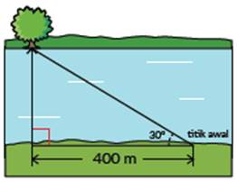
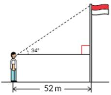
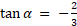
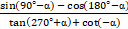
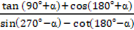
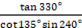
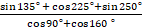

Silakan kerjakan soal berikut di kertas jawaban Anda.
2. Seorang ahli bangun perlu mengukur jarak sungai untuk mempersiapkan pembangunan jembatan. Pertama, ahli bangun tersebut memberikan tanda di titik awalnya dan melihat ada pohon besar di seberang sungai. Ia kemudian berjalan sambil mengukur jarak, sampai posisinya sejajar dengan pohon. Jarak yang baru saja ia tempuh adalah 400 meter. Ia kemudian kembali ke titik awal dan mengukur sudut perputaran arah ke posisi pohon dengan theodolit. Ia mendapatkan sudut sebesar 31°.
a. Tentukan panjang rancangan jembatan yang seharusnya berdasarkan informasi yang ada!
b. Evaluasi strategi pengukuran ulang: sudut 36° dan jarak 330,8 meter. Tepat atau tidak? Jelaskan.
3. Dimas sedang mencoba mencari tinggi tiang bendera. Dengan bantuan teman dan alat busur, ia memperkirakan sudut yang terbentuk antara kepala dan ujung tiang bendera adalah 34°.
a. Jarak antara Dimas dan tiang bendera adalah 52 m. Cari panjang sisi depan berdasarkan sudut dan jarak yang diketahui
b. Teman Dimas beranggapan bahwa jawaban di bagian a merupakan tinggi tiang bendera yang sesungguhnya. Dimas tidak setuju dengan pernyataan itu. Bagaimana pendapat kalian? Jelaskan alasannya.
4. Diketahui  dan 𝛼 adalah sudut di kuadran II, maka tentukanlah:
a. 
b. 
5. Tentukan nilai dari:
a. 
b. 